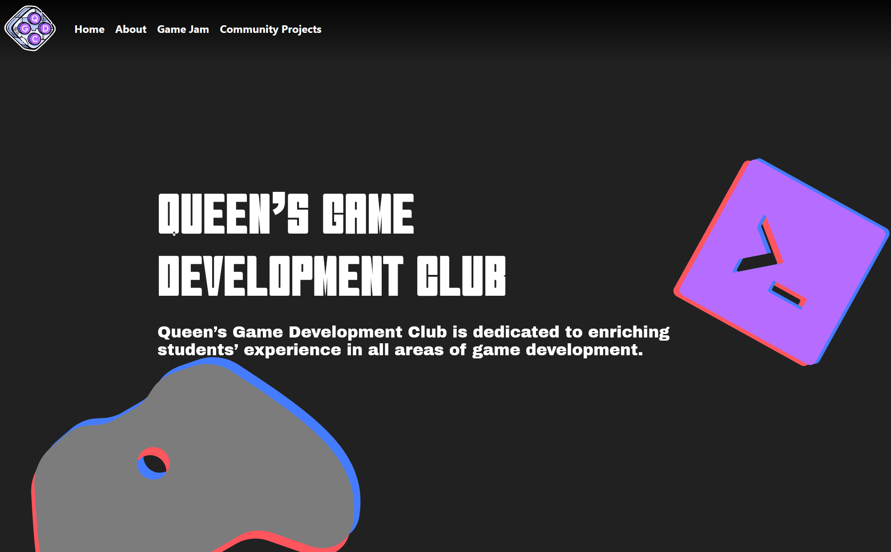

Discover the club
A persistent top navigation connects visitors to Home, About, Game Jam, and Community Projects without hiding the club's key destinations.
Web Development · Headless CMS · QA
A content-driven website for Queen's Game Development Club. I helped build the React and Tailwind frontend, connected community projects to Sanity Studio, and tested the experience so club executives could publish without editing code.

Frontend implementation, CMS integration, content modeling, and testing.
Built collaboratively for the Queen's Game Development Club.
Responsive pages with reusable layouts, navigation, and interactive sections.
Structured project entries populate the public site dynamically.
Authorized club executives can manage content through the Studio interface.
Component and end-to-end coverage for the main user journeys.
A persistent top navigation connects visitors to Home, About, Game Jam, and Community Projects without hiding the club's key destinations.
Large project cards give student games room for an image, title, description, creators, and a direct project link.
Sanity Studio gives approved editors a focused form for publishing and maintaining project information.
The Community Projects page is driven by structured CMS content instead of hard-coded cards. The Studio schema captures each project's title, description, creators, website, and image, then the React frontend turns published entries into the public showcase.
An authorized executive creates or updates a project entry.
Sanity stores the structured fields and associated project image.
The frontend requests the published project data at runtime.
The page maps each entry into a consistent, responsive showcase.
I helped implement the public-facing layouts and interactive sections while matching the site's bold, game-inspired visual direction.
I connected the Community Projects experience to a custom Sanity schema so content could be added and updated through a dedicated editor.
I contributed Jest and Cypress testing to verify components, navigation, CMS-driven content, and important end-to-end user flows.
The About page uses a wireframe version of the QGDC logo as a large animated background element. It slowly rotates behind the club mission and calls to action, while collapsible team groups keep a large directory of portraits, names, and roles organized without creating an endless wall of profiles.
This page documents my January to April 2025 contribution. The live QGDC website continues to evolve as later club teams add content and features.